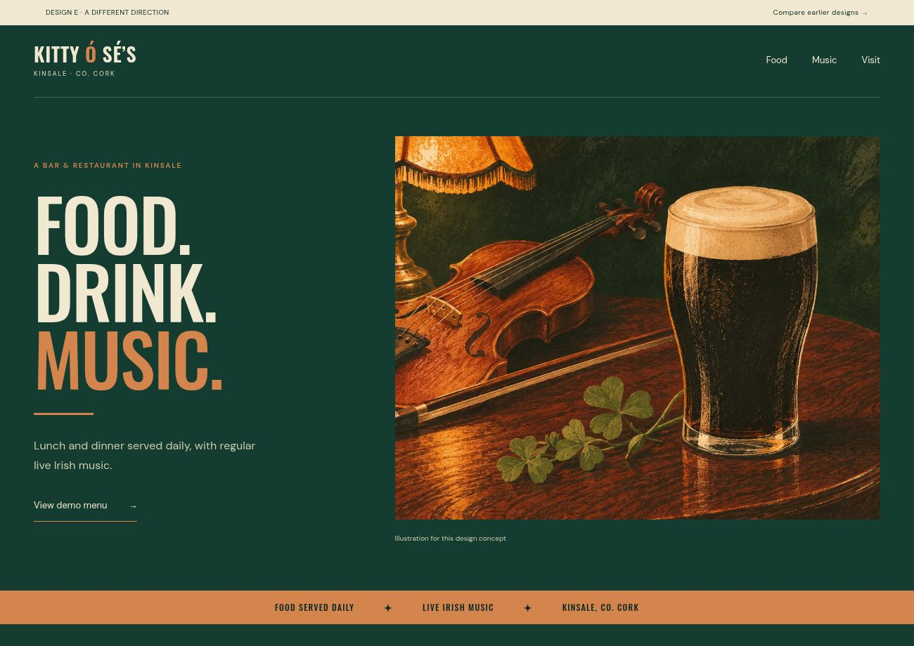

New · Option E
Illustrated pub.
Deep green, bold lettering and original concept artwork. A different direction with a lively, traditional pub feel.
Open full design →A new direction
Option E is a different illustrated direction. Open each preview to compare it with the other layouts.